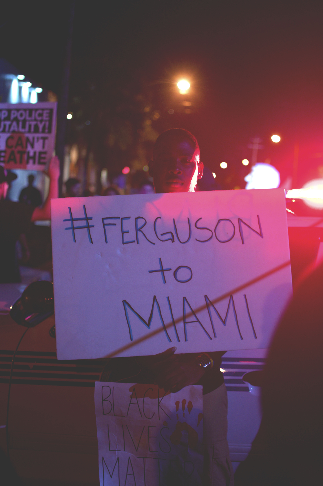

Police Bruatlity affects the community by one or more persons being victims of the brutality, and then that affects the victim's friends and families. It then makes people think that the police are the enemy. In response, people launch protests and sometimes even riots and even those get out of control because people can get injured. The point of having law enforcement is to enforce the law properly and treat every citizen with equality.
